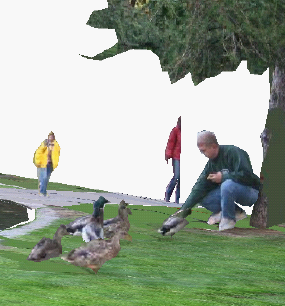

Research scientist
Computer Science and Engineering
University of Washington
Box 352350
Seattle, WA 98195-2350
Office: 444 Allen Center (directions)


|
Bryan C. Russell
Research scientist Computer Science and Engineering University of Washington Box 352350 Seattle, WA 98195-2350 Office: 444 Allen Center (directions)
|
|
Research: My research interests are primarily in computer vision. I am particularly interested in scene understanding and object recognition, with emphasis on reasoning about 3D geometry and large-scale data.
Bio: I received my Ph.D. from MIT in the Computer Science and Artificial Intelligence Laboratory in 2007 under the supervision of Professors William T. Freeman and Antonio Torralba. I was a post-doctoral fellow from 2008-2010 in the INRIA Willow team at the Département d'Informatique of Ecole Normale Supérieure in Paris, France.
Teaching
A complete list of my publications sorted by year, as a BibTeX file, and on Google scholar.
 |
Automatic Alignment of Paintings and Photographs Depicting a 3D Scene
B. C. Russell, J. Sivic, J. Ponce, and H. Dessales 3rd International IEEE Workshop on 3D Representation for Recognition (3dRR-11), associated with ICCV 2011. |
 |
Segmenting Scenes by Matching Image Composites
B. C. Russell, A. A. Efros, J. Sivic, W. T. Freeman, and A. Zisserman Advances in Neural Information Processing Systems (NIPS), 2009. |
|
LabelMe video: Building a Video Database with Human Annotations
J. Yuen, B. C. Russell, C. Liu, and A. Torralba IEEE International Conference on Computer Vision (ICCV), 2009. Video collection challenge |
|
|  |
Building a Database of 3D Scenes
from User Annotations
B. C. Russell and A. Torralba IEEE Conference on Computer Vision and Pattern Recognition (CVPR), 2009. Online demo |
 |
LabelMe: a Database and Web-based Tool for Image Annotation
B. C. Russell, A. Torralba, K. P. Murphy, W. T. Freeman International Journal of Computer Vision, 77(1-3):157-173, 2008. |
 |
Object Recognition by Scene Alignment
B. C. Russell, A. Torralba, C. Liu, R. Fergus, W. T. Freeman Advances in Neural Information Processing Systems (NIPS), 2007. |
 |
Using Multiple Segmentations to Discover Objects and their Extent in Image Collections
B. C. Russell, A. A. Efros, J. Sivic, W. T. Freeman, and A. Zisserman. IEEE Conference on Computer Vision and Pattern Recognition (CVPR), 2006. |
 |
Discovering Objects and their Location in Images
J. Sivic, B. C. Russell, A. A. Efros, A. Zisserman, W. T. Freeman International Conference on Computer Vision (ICCV), 2005. |